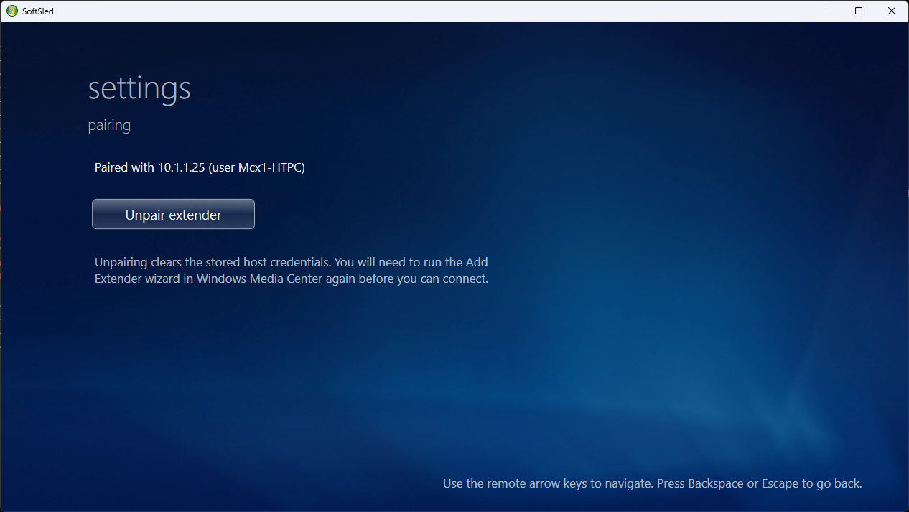

SoftSled has two halves: a small Host Setup tool you run once on your Media Center PC, and the Extender app you run on the PC you want to watch from. This guide walks through both, then pairing them together.
You'll need two Windows machines on the same network:
| Role | Requirements |
|---|---|
| Host Media Center PC |
Windows 7 (any edition with Media Center) or Windows 8 / 8.1 with Windows Media Center installed. This is the PC that has your TV tuners, recordings and media library. |
| Extender SoftSled PC |
A Windows PC to watch from. This runs the SoftSled extender app and renders the Media Center experience. |
Media Center will only talk to extenders whose certificate it trusts, and it normally insists on checking a certificate revocation list (CRL) that SoftSled's certificates don't publish. The SoftSled Host Setup tool handles both requirements for you. Download it from the Downloads page and run it as administrator on the host PC. It performs two reversible changes:
Mcx2Prov.exe (in %WINDIR%\ehome) with a patched build that skips the CRL check. A backup of the original is kept automatically, and genuine extenders continue to pair and connect as normal.The tool detects the current state on launch and offers Install / Re-install and Uninstall buttons, so you can cleanly revert both changes at any time.
Mcx2Prov.exe is a protected, TrustedInstaller-owned system file. The Host Setup tool takes ownership, swaps it and keeps a .softsled-backup copy — which is exactly what its Uninstall button restores.
On the PC you want to watch from, download the SoftSled Extender from the Downloads page and launch it.
The wizard walks you through:
Tell SoftSled whether this device is on wired Ethernet or Wi-Fi. A wired connection is recommended — it's stable enough to enable Remote Rendering, where Media Center draws the interface for the smoothest, most responsive result. On Wi-Fi, Remote Rendering is turned off to keep things responsive.
Say whether you're on a TV or a monitor/laptop. TVs get the 10-foot skin with larger, couch-friendly text designed to be read from across the room.
If Remote Rendering is off, the host streams the interface frame-by-frame, so you can dial animations to Full, Minimal (recommended) or None to keep things crisp over a busier link.
Pick the resolution SoftSled requests from Media Center (your display is auto-detected) and choose whether to run full screen.
Decide whether SoftSled should connect to Media Center automatically on open, and whether it should close when the Media Center session ends.
Finish the wizard and you'll land on the SoftSled shell, ready to pair.
From the SoftSled shell, choose Settings, then Pairing, and start the setup. SoftSled can generate its own extender certificate on the fly — no manual certificate juggling required.
SoftSled advertises itself on the network as a Media Center Extender and shows you the 8-digit setup key you'll type into Media Center.
Back on the host PC, inside Windows Media Center:
In Media Center, go to Settings → Extenders. SoftSled should appear in the list of discovered extenders.
Select SoftSled, choose Configure, and enter the setup key from the SoftSled app. Media Center runs through its pairing steps and provisions the extender.
When pairing completes, the host creates a dedicated Mcx user account and SoftSled receives the connection details.
Choose Start Extender in SoftSled. It opens the Media Center session over RDP and drops you onto the Media Center home screen.

The pairing screen in the SoftSled shell.
You're now running the full Media Center experience on your extender PC. Navigate with the arrow keys or a Media Center RC6 remote (press F11 to toggle fullscreen, Esc to leave the session). From here you can browse live and recorded TV, music, pictures and video — see the Features page for what's supported, or How It Works to understand what's happening under the hood.
Mcx user's password needing a manual reset after pairing. Check the project's README and issues on GitHub for the latest guidance.